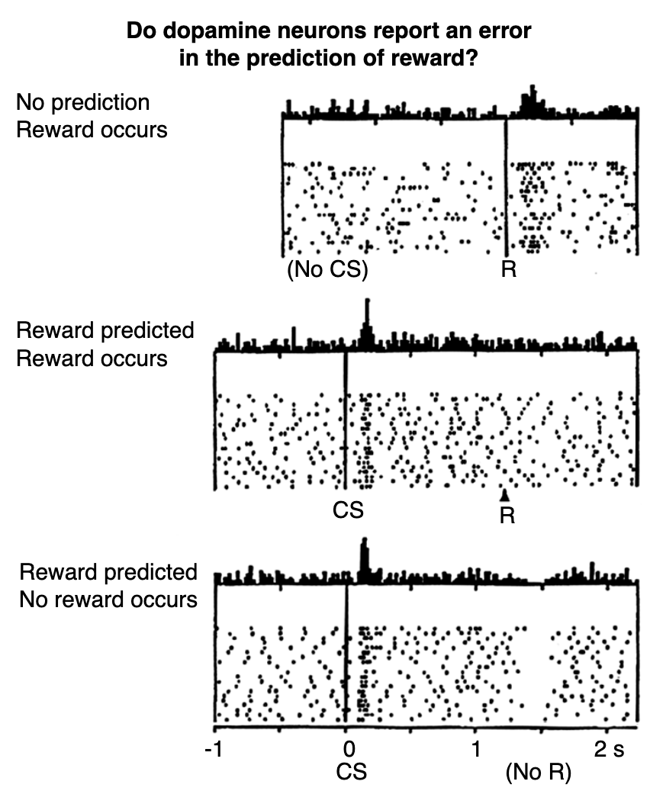
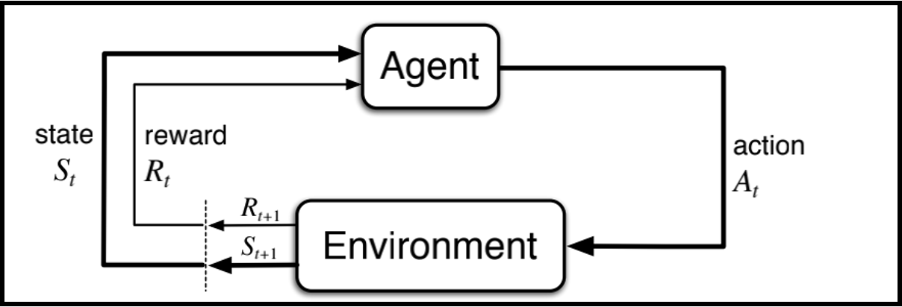
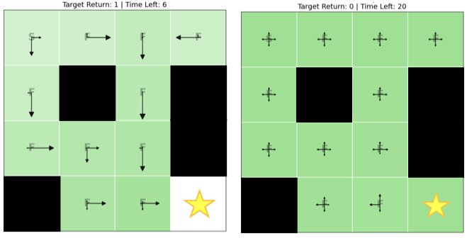
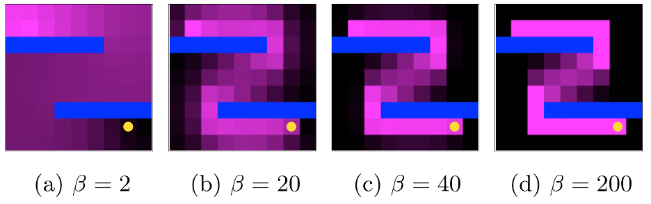
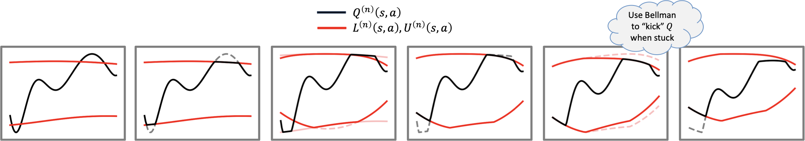
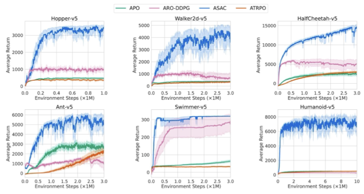

We establish a formal mapping between reinforcement learning and statistical mechanics by treating agent trajectories as microstates. This identification unlocks the full machinery of stat mech — partition functions, ensembles, free energies, and non-equilibrium protocols — yielding new algorithms, interpretable hyperparameters, and connections to neuroscience.
Use arrow keys, swipe, or the buttons below to navigate sections →
A core motivation for this work is that the brain continuously predicts the future. Sensory data, proprioception, and internal state form a representation; the brain selects actions to maximize an internal reward signal. This loop is mathematically identical to an RL agent.
The key empirical anchor is dopamine. Firing patterns of dopaminergic neurons are well-described by temporal difference (TD) errors — the same quantity that drives RL algorithm updates. Unexpected reward → neurons fire; omitted predicted reward → neurons pause.
δt = rt+1 + γV(st+1) − V(st) appears in both RL updates and as a model of phasic dopamine. One signal drives learning in brains and machines.
Encodes prediction error δ. Larger surprises → more firing. Matches TD learning.
Encodes average reward rate ρ — the baseline. Maps to average-reward RL.
Mouse cortex shows arithmetic Q-value combinations across tasks (Makino, 2022).

Reinforcement Learning (RL) is a set of tools, algorithms, objectives, and problems encompassing sequential decision-making. Rooted in models of behavioral psychology, it has now been subsumed in the machine learning literature as a core tenet for developing artificial intelligence. In RL, we typically consider Markov decision processes (MDPs). An agent observes state st, takes action at, receives reward rt, transitions to st+1 — modeled as a Markov Decision Process.
A state can be a high-dimensional image, the temperature in a room, speed of a car, or geographic location. Examples of actions include joystick control (up, down, left, right), steering angle, application of drug, or motor torque. These choices are often up to the problem-designer, and depends on our desired level of modeling the system.
Through interacting with their surroundings (the "environment"), an agent will generate a trajectory:The average-reward formulation (γ → 1) is natural for continuing tasks. The reward rate ρ plays the role of an energy density and maps onto tonic dopamine activity.
In average-reward RL, a single RPE update drives both the phasic signal (δ, prediction error) and the tonic signal (ρ, reward rate) — mapping directly onto the biological phasic/tonic dopamine distinction.
Combine Q-values from subtasks to solve novel tasks without retraining. Theoretical bounds in Adamczyk et al. 2023.
Add potential-based terms to guide learning without changing the optimal policy — a gauge invariance.
Model the full return distribution, not just the mean. Connected to distributional stat mech and dopamine quantile coding.

The central insight: treat trajectories as microstates. The entire machinery of statistical mechanics then applies. The RL community tends to be a bit more optimistic, so they prefer to "maximize rewards" rather than "minimize energy/loss", explaining the extra negative sign.
| Reinforcement Learning | Statistical Mechanics |
|---|---|
| Trajectory τ | Microstate |
| Reward r(s,a) | Hamiltonian −E |
| Value Function V(s) | Free Energy F |
| Regularization α | Temperature 1/β |
| Optimal Policy π* | Gibbs Distribution |
| Reset Penalty | Chemical Potential μ |
| Curriculum Learning | Driving Protocol λ(t) |
Maximum entropy subject to return constraint. Unifies Decision Transformer, Upside-Down RL, GCRL, and HER from a single partition function.

log Z = soft value function (free energy). Bellman equation = eigenvector equation. Recovers MaxEnt RL and soft Q-learning.

Reset penalty = chemical potential μ. Varying μ controls average episode length — giving physical meaning to a previously ad-hoc hyperparameter.
The soft-optimal value function satisfies an eigenvector equation for the tilted transfer operator. EVAL learns the left eigenvector from data, giving the optimal entropy-regularized average-reward policy. PPI (Posterior Policy Iteration) gives a solution to the ground state (rather than thermal) problem, by iterating the prior with the posterior policy. In principle, this can also be done in thermodynamics, but there (since there is no decoupling between state and action controllability), the procedure is equivalent to repeatedly halving the temperature.
Bogoliubov's variational principle bounds free energy via a reference Hamiltonian. Analogously, we derive tight upper/lower bounds on Q* and use them as clipping constraints. Clipping excludes invalid Q* regions; Bellman updates pull toward Q* — leading to faster, more stable convergence (RLC 2024).

Combining average-reward objective, entropy regularization, and actor-critic architecture yields ASAC — currently state-of-the-art across MuJoCo continuous control. The critic targets the differential value function (free energy relative to ground state); the actor maximizes entropy at a learned temperature.

Adding γΦ(s') − Φ(s) to any reward preserves optimal policies (Ng et al., 1999) — this is gauge invariance. Our self-consistent gauge sets Φ(n)(s) = η · maxa Q(n)(s,a), bootstrapping the current value estimate. This yields substantial gains across Atari (up to 100× on some games).
Maximizing entropy of the stationary state-action distribution without extrinsic reward is a stat mech problem. Our algorithm EVE derives a novel TD-style update from this principle directly, reaching the theoretical entropy ceiling faster and more sample-efficiently than all prior baselines. (Under review.)
Curriculum learning maps to a non-equilibrium driving protocol λ(t). The optimal curriculum minimizes excess work (regret) by following a geodesic in task space under the Fisher-Rao metric, satisfying a Cramér-Rao-style efficiency bound.
Treating trajectories as microstates gives an exact mapping between RL and statistical mechanics.
jacob.adamczyk001@umb.edu
rahul.kulkarni@umb.edu
UMass Boston
NSF IAIFI
Supported by NSF IAIFI · PHY-2019786